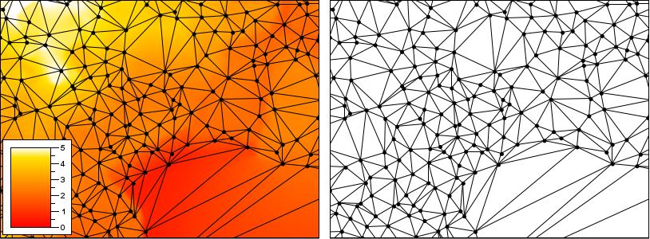

The Tinfour Software Project Documentation Page
These pages are under construction. Improvements and additional content are coming sooon.
Welcome to the Tinfour Software Project Documentation
To help you use Tinfour, we've posted three flavors of documentation:
- The Ideas –
Articles that introduce the concepts and techniques used in the Tinfour software.
These pages cover general topics related to the Delaunay triangulation, graph theory, and geospatial analysis.
- The Instructions –
Tutorials, code examples, useful tricks, and step-by-step instructions for
using the Tinfour software in your own projects.
- The Internals –
Notes on the internal design and algorithms of the Tinfour API. If you wish to add new features
to Tinfour, or write your own Delaunay triangulation software, you will find this document
a useful source of information.
What Tinfour Does
The focus of Tinfour is the Delaunay Triangulation. The Delaunay Triangulation
defines an optimal form for organizing unstructured or semi-random
sample points into a triangular mesh. That optimality makes the Delaunay Triangulation
a useful tool for interpolation, grid construction, and surface analysis.

The Ideas
The articles listed below describe the ideas that form the basis of the Tinfour software.
The Delaunay Triangulations
Natural Neighbor Interpolation
Natural Neighbor Interpolation is a technique for reconstructing a smooth and visually pleasing
surface from a set of scattered sample points.
- An Introduction to Natural Neighbor Interpolation –
This article provides a lightweight introduction to the ideas and mathematics behind the Natural Neighbor Interpolation.
It also discusses some of the strengths and weaknesses of the technique.
- A Fast, Accurate, and Efficient Algorithm for Natural Neighbor Interpolation –
The Tinfour software suite includes a robust implementation of the Natural Neighbor technique that
can process over a million interpolation per second on a commodity laptop. This article describes
the Tinfour algorithm and introduces an often overlooked test procedure that can be used to verify that a
Natural Neighbors implementation is correct.
Volume and Capacity Analysis for Lakes and Reservoirs
The Constrained Delaunay Triangulation (CDT) can be used as an efficient tool for computing the volume and
capacity of lakes and reservoirs. This series of articles describes the Tinfour technique
and how its used in an application called the Simple Volumetric Model (SVM)
- Using the Delaunay to Compute Lake Volume, Part 1 –
This article shows how the Constrained Delaunay was used to compute the volume of Lake Victoria in Africa.
The analysis used two collections of depth soundings and a digitized shoreline information.
- Using the Delaunay to Compute Lake Volume, Part 2 –
This article provides implementation notes and detailed results for the Tinfour lake computations.
Sample code is available at the Tinfour Software Project repository on Github.
- Using the Delaunay to Create a Reservoir Volume Model –
The volume of water in a reservoir can vary based on season and public demand. The Simple Volumetric Model provides
a tool for computing water volume and capacity based on water level. Results are provided for the Alan Henry Reservoir in Texas, USA.
- Using the Simple Volumetric Model –
This article provides details on using the Simple Volume Model. Results are provided for the Lake of the Arbuckles in Oklahoma, USA.